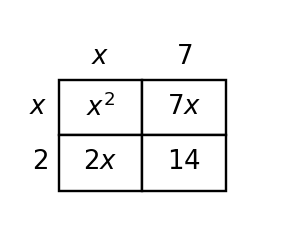

Special Factoring Patterns
Mathematical idea: Special patterns work because certain products always create predictable structures such as perfect squares or differences of squares.
Today you will classify expressions, factor special patterns, and decide when an expression only looks like a special case. You will use visual structure and multiplication checks to support your choices.
Learning Target
Learning Target: Students will recognize and factor special polynomial patterns.
I can statements
- I can design a strategy for factoring special polynomial patterns.
- I can apply difference-of-squares and perfect-square-trinomial patterns.
- I can assess whether a polynomial fits a special factoring pattern before rewriting it.
What's To Come
This is a long-range preview for future lessons. Do not solve it today. Instead, annotate it individually. Circle anything familiar, underline symbols or directions that seem important, and write notes about what information you think will be needed later.
As you annotate, ask yourself: What parts (words, symbols, graphs) do you KNOW? What parts look FAMILIAR? What parts look like jibberish?
Create three expressions: one difference of squares, one perfect-square trinomial, and one expression that looks similar but is neither. Explain the structural evidence for each classification.
Intro
Directions
Read the introduction aloud with a partner or in a small group. As you read, annotate the text by highlighting important ideas, circling key vocabulary, and writing short notes about connections, questions, or predictions in the margins.
Some polynomial expressions have patterns that make factoring faster. A perfect-square trinomial comes from multiplying the same binomial by itself, so the first and last terms are squares and the middle term matches twice the product of the square roots. The pattern is not just a name; it is a structure that can be checked.
A difference of squares has exactly two square terms with subtraction between them. It factors into conjugates, which are binomials with the same terms but opposite signs. The middle terms cancel when the conjugates are multiplied.
Expressions can look similar to a special pattern without actually fitting it. If the signs, square terms, or middle term do not match the required structure, using the shortcut will create a wrong factorization. A careful check prevents pattern overuse.
Visual models make the difference easier to see. A square area model supports a perfect-square trinomial, while a rectangle with unequal side lengths may show a regular trinomial instead. Tables of features can also help separate examples from nonexamples.
Special patterns are efficient only when they apply. When they do not apply, students should return to common factors, product-sum reasoning, or another factoring strategy.
Stop and Discuss
- What makes a trinomial a perfect-square trinomial?
- What makes an expression a difference of squares?
- Why should you check structure before applying a special pattern?
A perfect-square trinomial is produced by multiplying the same binomial by itself.
$$(x+4)^2=x^2+8x+16$$| Feature | Check |
|---|---|
| First term | $x^2$ is a square |
| Last term | $16=4^2$ |
| Middle term | $2(x)(4)=8x$ |

Context: The square model shows why the two middle rectangles are the same size.
Example 1: Classify Special Patterns
Classify $x^2-49$, $x^2+14x+49$, and $x^2+49$.
Decide whether each is a difference of squares, perfect-square trinomial, or neither.
- Check the number of terms and signs.
- Identify any square terms.
- Classify each expression with evidence.
You Try It 1: Sort the Pattern
Classify $y^2-81$, $y^2-18y+81$, and $y^2+81$.
Use structure, not appearance alone.
- Check squares and signs.
- Classify each expression.
- Explain one nonexample.
Stop and Discuss
- What mathematical structure did Example 1 and You Try It 1 have in common?
- What check would convince you that the answer is reasonable?
A difference of squares has two square terms separated by subtraction.
$$x^2-25=(x-5)(x+5)$$| Expression part | Evidence |
|---|---|
| $x^2$ | square of $x$ |
| $25$ | square of $5$ |
| Subtraction | difference, not sum |

Context: The opposite signs make the middle terms cancel when the factors are multiplied.
Example 2: Factor Special Patterns
Factor $x^2-64$ and $x^2+12x+36$.
Use a special pattern only when the structure fits.
- Name the pattern for each expression.
- Write the factored form.
- Multiply one answer back to check.
You Try It 2: Use the Shortcut
Factor $a^2-100$ and $a^2-10a+25$.
Choose a special pattern when it fits.
- Name each pattern.
- Write both factored forms.
- Check one by multiplying.
Stop and Discuss
- What mathematical structure did Example 2 and You Try It 2 have in common?
- What check would convince you that the answer is reasonable?
Not every trinomial with square-looking ends is a perfect-square trinomial.
$$x^2+9x+14 \ne (x+7)^2$$| Check | Result |
|---|---|
| First and last squares? | Not both: $14$ is not a perfect square |
| Middle term match? | No |
| Conclusion | Use regular factoring |

Context: The rectangle is not a square, so the expression does not match a square pattern.
Example 3: Reveal a Hidden Pattern
Factor $3x^2+18x+27$ completely.
Look for a common factor before checking for a special pattern.
- Factor out the GCF.
- Classify the remaining trinomial.
- Write the complete factored form.
You Try It 3: Factor GCF First
Factor $2x^2-20x+50$ completely.
Remove the common factor before using a special pattern.
- Find the GCF.
- Classify the inside expression.
- Write the complete factored form.
Stop and Discuss
- What mathematical structure did Example 3 and You Try It 3 have in common?
- What check would convince you that the answer is reasonable?
Example 4: Critique a Square Claim
A student says $x^2+16x+64$ is not special because it has three terms.
Use structure to critique the claim.
- What square terms are present?
- Does the middle term match the perfect-square pattern?
- Write the correct factorization and explain.
You Try It 4: Explain a Look-Alike
A student says $x^2+12x+25=(x+5)^2$.
Check the middle term and revise the claim.
- What would $(x+5)^2$ expand to?
- What mismatch do you see?
- Is the original expression a perfect-square trinomial?
Stop and Discuss
- What mathematical structure did Example 4 and You Try It 4 have in common?
- What check would convince you that the answer is reasonable?
Summary
Special factoring patterns are shortcuts that come from predictable multiplication structures.
Perfect-square trinomials have square first and last terms and a middle term equal to twice the product of the square roots.
A difference of squares has two square terms with subtraction and factors into conjugates.
A look-alike expression should be checked before a shortcut is used; otherwise the factorization may not multiply back correctly.
Common Mistakes
- Factoring a sum of squares. Why it is tempting: students see two squares and forget the sign. What to check instead: confirm the expression is a difference, not a sum.
- Trusting square ends only. Why it is tempting: first and last terms may be squares while the middle term fails. What to check instead: check the middle term against twice the product.
- Missing a GCF first. Why it is tempting: the special pattern may be hidden after a common factor. What to check instead: factor out the GCF before classifying.
- Wrong conjugate signs. Why it is tempting: opposite signs are needed for cancellation. What to check instead: multiply to see whether the middle terms cancel.
- Calling any rectangle a square. Why it is tempting: area models can have unequal side lengths. What to check instead: compare row and column labels before claiming a perfect square.
Optional Future Task Reflection
Look back at the future task. Do not solve it yet. Highlight one part that makes more sense now than it did at the beginning. Circle one part that still feels unfamiliar. Write one sentence about what representation you would look at first.
Classify each expression as a difference of squares, a perfect-square trinomial, or neither.
- $x^2-64$
- $y^2-6y+9$
- $4x^2+4x+1$
- $5x^2-45$
Factor each expression completely. Use a special pattern when possible.
- $64x^2-y^2$
- $4x^2+12x+9$
- $9x^2-24x+16$
- $x^2-3x+18$
What is one idea about special factoring patterns you understand better now than at the start of class? Write at least one complete sentence.
What is one thing about special factoring patterns you still want to understand or practice? Be specific — name the idea, not just "everything."